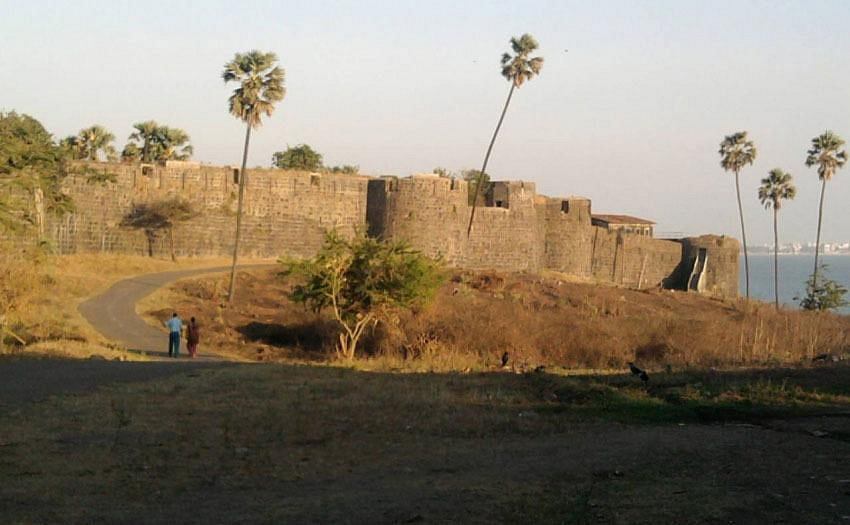

Mudh Island, situated off the coast of Mumbai, India, offers a serene escape from the hustle and bustle of the city. While not as well-known as some of Mumbai's other beaches, Mudh Island Beach attracts visitors seeking tranquility and natural beauty. With its relatively secluded location, the beach provides a peaceful atmosphere, making it an ideal spot for relaxation and quiet contemplation.
Unlike some of the more popular beaches in Mumbai, Mudh Island Beach is not typically crowded, offering visitors ample space to unwind and enjoy the sound of waves crashing against the shore. The beach features soft golden sands stretching along the coastline, inviting visitors to take leisurely walks or simply lounge by the water's edge.
While swimming may not be advisable due to strong currents and other safety concerns, Mudh Island Beach offers opportunities for sunbathing, picnicking, and enjoying the scenic views of the Arabian Sea. Visitors can also indulge in beachcombing, exploring the shoreline for shells and other natural treasures washed ashore by the waves.
One of the highlights of visiting Mudh Island Beach is its stunning sunsets. As the day draws to a close, the sky comes alive with vibrant hues of orange and pink, casting a mesmerizing glow over the tranquil waters. Watching the sunset from Mudh Island Beach is a magical experience and a perfect way to end the day.
While amenities such as food stalls and recreational activities may be limited compared to more developed beaches, Mudh Island Beach offers a peaceful retreat where visitors can reconnect with nature and enjoy the simple pleasures of a seaside escape. Whether seeking solitude or a quiet spot to enjoy quality time with loved ones, Mudh Island Beach provides a serene oasis amid the bustling cityscape of Mumbai.

Major Attraction:
Gateway of India: Iconic monument overlooking the Arabian Sea